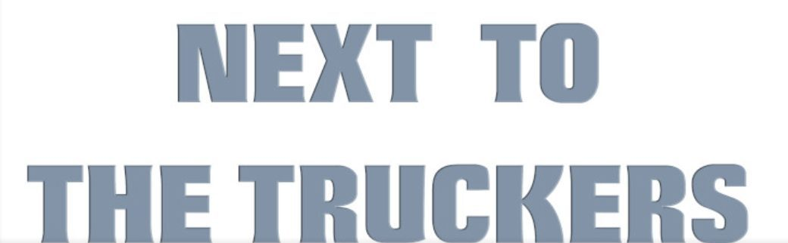
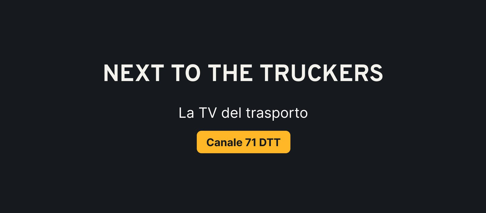
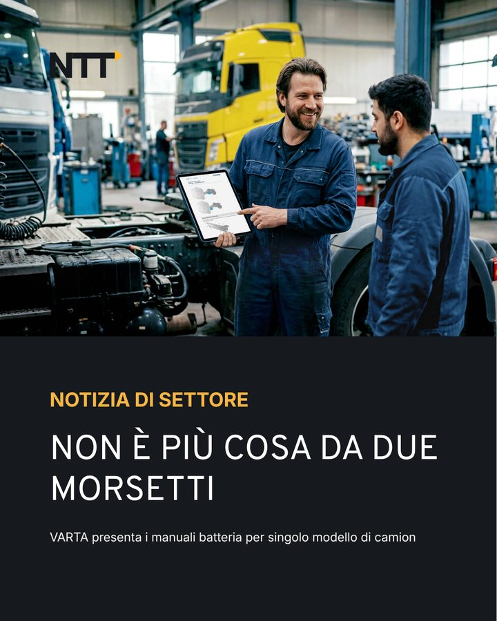
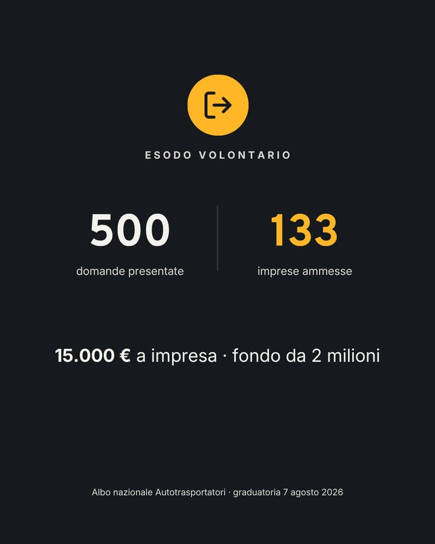
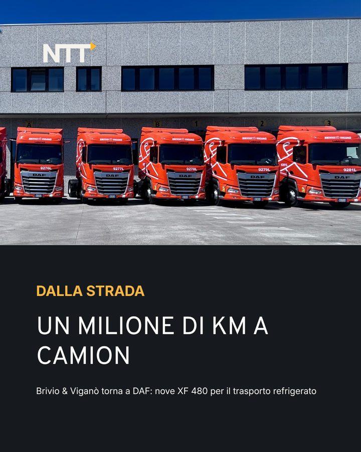
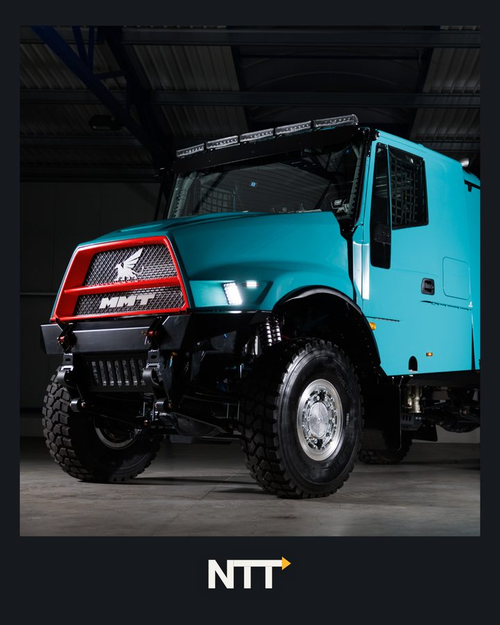

Next to the Truckers
The TV show about road transport. I created the show's new identity, I run its social media and I'm building its new website.
- Period
- Since June 2026, ongoing
- What I did
- Identity, social media, website
- Channels
- Instagram, Facebook, LinkedIn
- Tools
- Figma, Canva, CapCut, Claude Code

Where we started
Next to the Truckers airs every week on the Italian channel Canale Italia and speaks to the people who do transport every day: drivers, company owners, fleet managers.
The problem
A dated, hard-to-recognise image. On social media almost the only ones engaging were the brands mentioned in the posts: the content thought like a press office, not like a community. And social media, TV and website didn't talk to each other.
The new identity
The monogram
The three letters with a yellow triangle pointing down the road. On the website the same triangle becomes the play button for the videos.
The colours
- Asphalt authority
- Yellow the road, and maximum legibility
- Sand
- Light
The typefaces
Overpass
For headings: it comes from road signage.
Inter
For body text: easy to read on any screen.
Then I carried it across every channel: cover images and profile pictures on Facebook and LinkedIn, the bios for all three profiles, and templates for episode announcements and guest quotes.






Social media
Each channel has its own audience and voice. LinkedIn speaks to company owners and fleet managers. Instagram and Facebook speak to drivers, in a more direct tone.
I write the copy, the reel scripts and the graphics. I'm the face of the Instagram reels: in thirty seconds I explain a piece of news drivers can use, like a grant or a public funding call.
What the numbers taught me
Reels built on a concrete fact that affects a driver's job get 3,000 to 5,000 views. The ones that explain a topic stop at around 650.
So we changed the plan: fewer explanations, more stories from the road. And every number I publish has a source.
July – September 2026
- Instagram went from 400 to 2,030 followers. Over a thousand came from one sponsored introduction reel, the rest from the weekly content.
- Facebook went from 800 to over 1,500 followers.
- The LinkedIn page, opened in July, went from zero to 550 followers.
The website, in progress
The old website didn't belong to the client: the platform, videos and content all sat with an outside supplier. I'm building the new one from scratch, with no WordPress: the client owns everything and can change hosting whenever they want. It goes live in January 2027.
What the audience sees
Episodes and interviews at the centre, news in the background. The same yellow, the same typefaces and the same triangle as on social media. Videos only load when you click, so pages open fast, and you can even search inside the episode transcripts.
What the editorial team uses
A custom panel to publish episodes, interviews and news on their own. A piece can go live by itself at a set time. There are two roles, admin and editor, and a user guide written for them.
What you don't see
Moving over from the old site without losing content or Google rankings. Search engine data on every episode, accessibility following the WCAG guidelines, a protected panel, and a full content export: the client can take their content with them at any time.
How I'm building it
I designed it and I'm developing it with AI: I write the project rules, split the work into phases and check every step. Every decision is written down with its reason, and after every change an automated check runs 92 tests. In two weeks the site went from nothing to a prototype the client approved.
Front end in HTML, CSS and JavaScript. Back end in PHP and MySQL.
Why together
Logo, social media and website come from the same hands. The yellow, the typefaces and the tone are the same everywhere: someone who sees a reel and then opens the website knows straight away they're in the same place. And the client has just one person to ask.
Want your website and social media to say the same thing?
Tell me what you need: the first call is free.